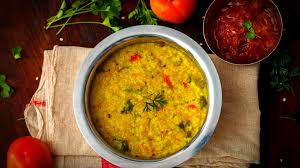

Khichdi Recipe

Ingredients:
- 1/2 cup rice (short-grain like Basmati or Sona Masoori)
- 1/2 cup yellow moong dal (split yellow lentils)
- 4 cups water
- 1/2 cup diced carrots (optional)
- 1/2 cup diced potatoes (optional)
- 1/4 cup green peas (optional)
- 1/4 cup diced green beans (optional)
- 1 tablespoon ghee (clarified butter) or oil
- 1 teaspoon cumin seeds
- 1/2 teaspoon mustard seeds
- 1/4 teaspoon asafoetida (hing)
- 1-inch piece of ginger, finely chopped
- 2 green chilies, slit (optional, adjust to taste)
- 1/2 teaspoon turmeric powder
- 1/2 teaspoon red chili powder (optional)
- Salt to taste
- Fresh coriander leaves, chopped for garnish
Steps:
- Rinse the rice and moong dal together in water until the water runs clear. Soak them in water for about 15-20 minutes.
- Prepare the vegetables by washing, peeling, and dicing them into small pieces, if using.
- Heat ghee or oil in a pressure cooker or a large pot over medium heat.
- Add cumin seeds and mustard seeds. Let them splutter.
- Add asafoetida, ginger, and green chilies. Sauté for a minute until the ginger turns fragrant.
- Add the diced vegetables (if using) and sauté for a few minutes until they are slightly tender.
- Drain the soaked rice and dal, and add them to the pot. Mix well with the vegetables and spices.
- Add turmeric powder, red chili powder (if using), and salt. Mix everything well.
- Pour in 4 cups of water and stir to combine all the ingredients.
- Pressure Cooking Method: Close the lid of the pressure cooker and cook on high heat until you hear the first whistle. After the first whistle, reduce the heat to low and cook for another 5-7 minutes. Turn off the heat and let the pressure release naturally.
- Open Pot Method: If using a pot, bring the mixture to a boil, then reduce the heat to low. Cover the pot with a lid and let it simmer for about 25-30 minutes, or until the rice and dal are fully cooked and have a mushy consistency. Stir occasionally to prevent sticking.
- Once the pressure has released or the khichdi is cooked in the pot, open the lid and give it a good stir. If the khichdi is too thick for your liking, you can add a little more hot water to reach your desired consistency and bring it to a boil again.
- Garnish with fresh chopped coriander leaves.
- Serve the khichdi hot with a dollop of ghee on top. It pairs well with yogurt, pickle, papad (crispy lentil crackers), or a simple salad on the side.
Back to Main Menu